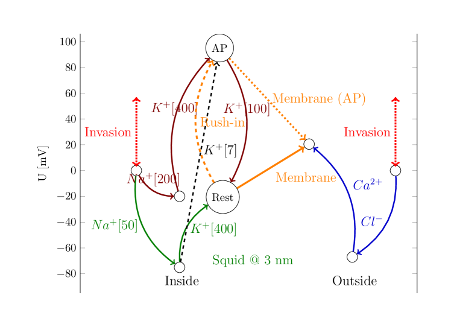
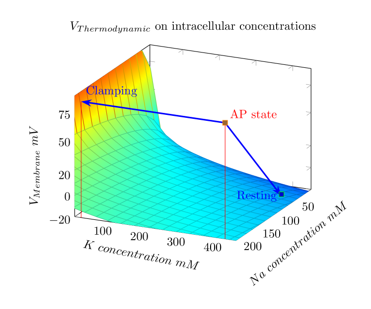

A 4.1 ábrán láthatók azok a változások, amelyek az egyensúlyi állapotából kimozdított neuronban végbemennek. Ezek a folyamatok természetesen lassúak, azok szerepét a tranziens folyamatban a 3.4.1 szakaszban tárgyaljuk, itt csupán a áramra vonatkozó állításainkat illusztráljuk. Állításunkat lényegében a Kirchhoff’s Voltage Law-ra alapozzuk, ami szerint egy zárt áramkörben a feszültségek összege nulla; esetünkben az áramkör a neuron belsejétől a külső környezetig tart. Ha bármilyen okból a külső és a belső potenciálszint nem egyforma, akkor mindaddig áram folyik, amíg az ki nem egyenlítődik (az áram töltést szállít, és potenciálváltozást okoz; nem ideális feszültséggenerátor). Természetesen a kiegyenlítődés nem pillanatszerű, az áramnak időfüggése van.
Az ábra bal és jobb oldalán egyaránt a függőleges skála nulla értékénél van a nyugalmi potenciálszint. Nyugalmi állapotban (invázió nélkül) az intracelluláris szegmensben a [Na50,K400] koncentrációk vannak jelen a sejten belül. Ezeket használva a zöld nyilak mentén (a Nernst feszültségek alapján, lásd a 3.1 Táblázatot) a ”Rest” állapotba jutunk, ami a magasságban található. Jobb oldalt az extracelluláris szegmensben a szintén 0 magasságban levő pontból a kék nyilak mentén ugyanilyen módon egy, a magasságban levő pontba érkezünk. A két említett pont közötti potenciál különbség , amit HH ekkorának mért. Ami ugyan korrekt érték, de elektrosztatikus feltöltődés eredménye és nem pedig az általuk feltételezett ”leakage current” következtében fellépő feszültségesés. A membrán két oldala közötti feszültség (amit a folyamatos narancssárga nyíl jelképez) felfelé mutat, ami az intracelluláris térben levő pozitív ionokat megakadályozza abban hogy az extracelluláris tér felé elinduljanak, és az extracelluláris térben levő negatív ionokat abban, hogy az intracelluláris tér felé induljanak. Az extracelluláris szegmensben levő ionok számára viszont a membrán átjárható, azaz folyamatos pumpálásra van szükség. A külső és a belső oldal között nincs potenciálkülönbség, ezért áram nem folyik.
Ha bármilyen okból a membrán feszültség a küszöbérték fölé emelkedik, akkor a neuron a rendkívül gyors beáramlás miatt a membrán potenciál kb. értékkel megnő (egy [Na200,K400] állapot áll elő, lásd a barna nyilakat), azaz a neuron átugrik az AP buborékba. Az eddig felfelé mutató narancs nyíl most szaggatva lefelé mutat: a pozitív ionok ( és is) kiáramlása szabad utat kap, a ionok számára viszont megszűnik a lejtős pálya. A membrán felületi rétegében azonban szabad ionként túlnyomó többségben a most érkezett ionok vannak, így az ionáram az AIS-en keresztül főként ilyen ionokból áll. A membrán feszültség jelentős emelkedése maga után húzza a a neuron belső tere potenciáljának jelentős emelkedését. Áram indul, ami igyekszik a kezdeti feszültség és koncentráció viszonyokat visszaállítani. A membrán extracelluláris környezete rendkívül stabil (a koncentrációk nem változnak), a sejt belsejében viszont a feszültség ugyanilyen mértékben megemelkedik, az ”Invasion” irányába. A membrán potenciál a koncentráció változása miatt változott meg lényegesen, ezért a sejt majd azokat mozgatja az egyensúly irányába.

A természetes AP esetén nincs akadálya, hogy a neuron a korábbi állapotát bármelyik paraméter változtatásával helyreállítsa, ezért a rendszer koncentrációi elindulnak a [Na50,K400] állapot felé. Ezt legegyszerűbben úgy tudja elérni, hogy a Na[200]-ból igyekszik Na[50]-et csinálni, a még/már megfelelő koncentrációban van. Azaz, (főként) ionokat bocsát ki az AIS-en keresztül, amíg a potenciálkülönbség nullára nem csökken. A koncentráció csökkentése egyúttal a membrán feszültséget is csökkenti, azaz a felesleges (a rush-in során beengedett) ionok kibocsátása után a neuron alapállapotba áll vissza; egy körfolyamat zajlik le.
A ”clamping” rögzíti a membrán feszültségét, azaz a neuron a kiindulási nyugalmi állapotot nem tudja helyreállítani; ehelyett a koncentrációk változtatásával kell új egyensúlyt találnia, miközben a mesterséges AP után a clamping (negative feedback alkalmazásával) a membrán potenciált rögzített értéken tartja. Mindaddig áram folyik, amíg és koncentrációk Nernst-feszültségei ellensúlyozni nem tudják a clamping feszültséget. Ebből a [Na50,K400] állapotból kell a neuronnak úgy beállítania a potenciált, hogy a Nernst-feszültségek plusz a membránfeszültség plusz a clamping feszültség összege nulla legyen (tehát egy másik egyensúlyi helyzetet kell beállítani!), miközben a feszültség rögzítve van. Ehhez csökkentenie kell a koncentrációt, miközben a koncentráció már lényegében jó értéken áll (az előzőhöz képest fordított eset). Még pedig nem is kis mértékben: K+[7] idéz elő csak akkora feszültségváltozást, amekkorát a clamping 100 mV rákényszerít a sejtre. Ezt a feszültséget a zöld hajlított és a fekete szaggatott egyenes útvonal adja meg. A neuron ezt a [Na50,K7] koncentrációt úgy tudja elérni, hogy intenzív kibocsátásba kezd.

A esethez képest további fontos eltérés, hogy most nincs a membránon elektrosztatikus gyorsítás (a beáramlás is ezért állt le), csupán a clamping miatt előállt termodinamikus szívóhatás kifelé. A ionok érzik a hívást, de csak diffundálni tudnak, és ettől a fiziológus ”delayed current”-et lát. Valóban ionok áramlanak ki a membránon keresztül, de addig nem tudnak kilépni, amíg az elektromos potenciál nem csökken a koncentráció ekvivalens termodinamikus hajtóereje alá. A clamping mérés alkalmával először kezd távozni. A kibocsátás rövid szakaszon (egyidejűleg) párhuzamosan történik: a az AIS-en kezd távozni, miközben a membránon keresztül a ”felesleges” ionok távoznak. A természet furcsa játéka, hogy a termodinamikai és elektromos potenciál eredője a ionokat a membrán felülettel párhuzamosan, az AIS felé, a ionokat pedig a felületre merőlegesen a membrán felé mozgatja, kb. az akciós potenciál feszültség csúcsának eléréséig, egyidejűleg. A két áram nem ugyanott folyik, így nem is képesek ellentétes irányú áramként interferálni és hiperpolarizációt előidézni. A hiperpolarizációt a áram irányváltása idézi elő, amit az elektromos szemléletben a kondenzátor kapacitív áramaként, a mechanikus szemléletben a rugalmas membrán rezgésének negatív periódusaként értelmezhetünk. Azaz, a áram a clamping által előidézett artifact, amit a ’clamping’ mérési feltételei okoznak, természetes körülmények között a neuronban nem fordul elő.
Szóval, innét származik a ” áramlik ki a membránon keresztül az AP második fázisában, a beáramláshoz képest jelentős késéssel” városi legenda. Tényleg valós mérés, tényleg ion, csak éppen nem azt mérték, amit gondoltak. HH is meg kései utódaik is. Tehát nincs szó specifikus és (egymáshoz szinkronizált) csatornákról: mindkét esetben a koncentráció és potenciálviszonyok döntenek arról, hogy milyen ionok áramlanak és merrefelé. Nem árt, ha jó modellt alkalmaz az ember arra, amit tanulmányozni akar. HH tisztában volt azzal, hogy az övék nem jó, de nem tudtak jobbat. Sajnos, a tévhitet terjesztették.
A 4.2 ábra a folyamat képszerű összefoglalását mutatja. A felület pontjai az ionokra ható Nernst-feszültséget adják meg, különböző kombinációk esetén. A felületen levő pontok egyensúlyi helyzetben vannak. A AP kezdete az addig egyensúlyi helyzetben levő pontot jóval a felületen kívülre mozgatja. Az újbóli egyensúlyi helyzetet a clamping kényszerítő hatása nélkül a neuron a megelőző állapot paramétereinek visszaállításával tudja megtalálni. Clamping esetén olyan új koncentrációkat kell beállítania, amelyek mellett a Nernst feszültségek összege ellensúlyozni tudja a clamping feszültséget. Mindkét esetben relaxációs folyamat zajlik le, ezt a natív folyamat esetén AP-ként méri a fiziológia.
A mechanikus kép szerint a ”robbanás” után a rugalmas membrán relaxál, azaz egy darabig nyomja, aztán meg húzza a (és kevesebb ) keveréket az AIS-en át, ami oda és vissza folyó áramot eredményez. Ezt méri a fiziológia AP-ként. (Ha netán jelzett atomokat tesznek a citoplazmába, akkor tényleg lesz ellenirányban áramló is, de kevés.)
HH klasszikus kísérletében a clamping azt jelenti, hogy a bal oldali ”Invasion” úgy emeli hirtelen a membránfeszültséget az AP-nál mért csúcsértékre, hogy a koncentrációk nem változnak. Az áram csak akkor szűnik meg, ha a belső szegmensek Nernst-feszültségeinek különbsége kiegyenlíti a clamping feszültséget. A töltéshordozók lassúsága miatt a folyamat nem azonnali.